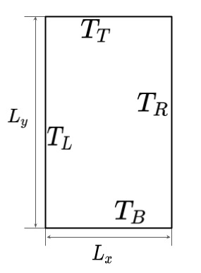
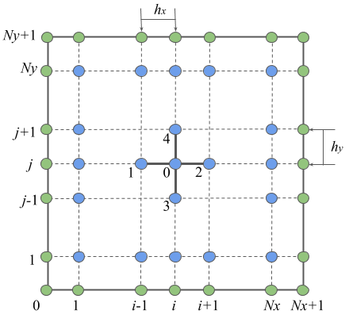
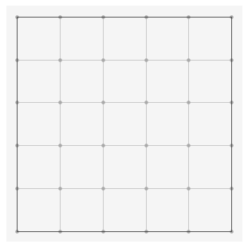
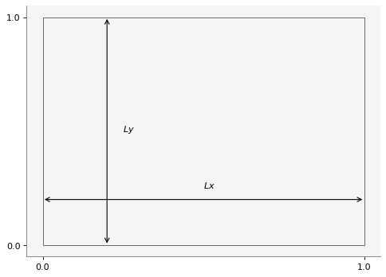
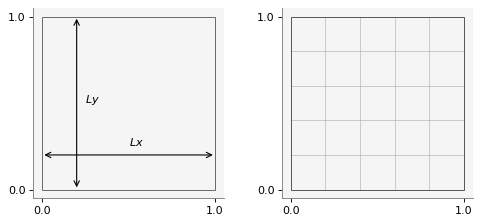
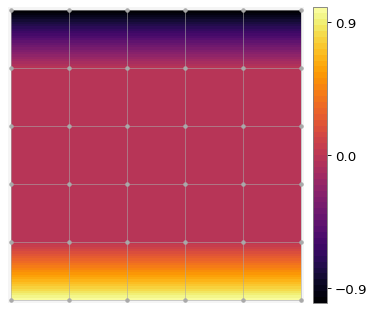
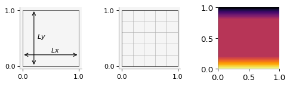
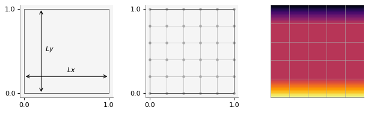
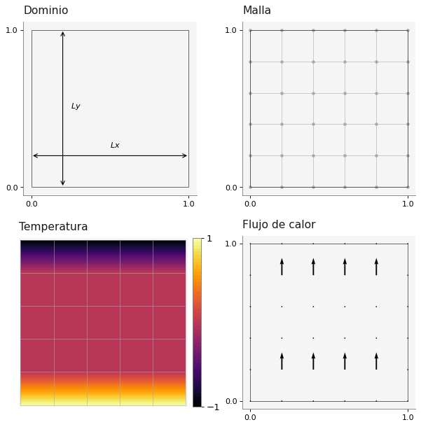
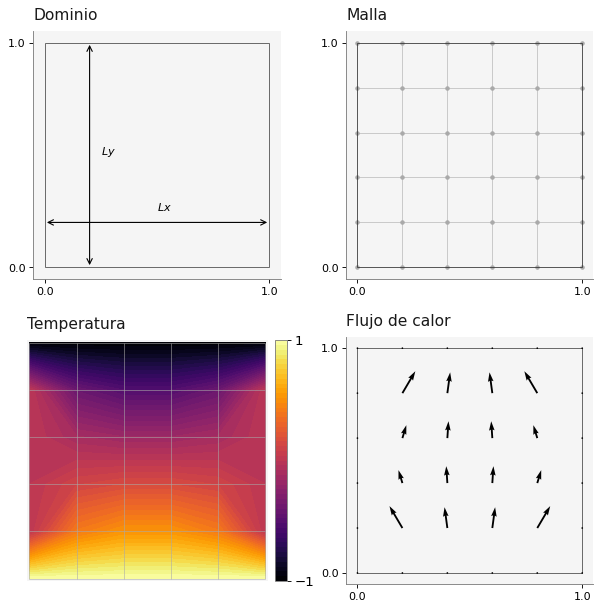

import numpy as np
import matplotlib.pyplot as plt
import macti.visual as mvis4 Conducción de Calor estaionaria en 2D.
Objetivo General - Resolver numérica y computacionalmente la ecuación de conducción de calor estacionaria en dos dimensiones usando un método implícito.
Objetivos particulares - Definir los parámetros físicos y numéricos. - Definir la malla del dominio. - Definir la temperatura inicial junto con sus condiciones de frontera y graficarla sobre la malla. - Definir el sistema lineal y resolverlo. - Graficar la solución.
HeCompA - 02_cond_calor by Luis M. de la Cruz is licensed under Attribution-ShareAlike 4.0 International


Trabajo realizado con el apoyo del Programa UNAM-DGAPA-PAPIME PE101922
4.1 Introducción.
Jean-Baptiste Joseph Fourier fue un matemático y físico francés que ejerció una fuerte influencia en la ciencia a través de su trabajo Théorie analytique de la chaleur. En este trabajo mostró que es posible analizar la conducción de calor en cuerpos sólidos en términos de series matemáticas infinitas, las cuales ahora llevan su nombre: Series de Fourier. Fourier comenzó su trabajo en 1807, en Grenoble, y lo completó en París en 1822. Su trabajo le permitió expresar la conducción de calor en objetos bidimensionales (hojas muy delgadas de algún material) en términos de una ecuación diferencial:
\[ \dfrac{\partial T}{ \partial t} = \kappa \left(\dfrac{\partial^2 T}{ \partial x^2} + \dfrac{\partial^2 T}{ \partial y^2}\right) + S \]
donde \(u\) representa la temperatura en un instante de tiempo \(t\) y en un punto \((x,y)\) del plano Cartesiano, \(\kappa\) es la conductividad del material y \(S\) una fuente de calor.
4.2 Conducción estacionaria en 2D.
 Cuando el problema es estacionario, es decir no hay cambios en el tiempo, y el dominio de estudio es una placa en dos dimensiones, como la que se muestra en la figura, podemos escribir el problema como sigue:
\[ - \kappa \left(\dfrac{\partial^2 T}{ \partial x^2} + \dfrac{\partial^2 T}{ \partial y^2}\right) = S \tag{1} \] Podemos aplicar condiciones de frontera son de tipo Dirichlet o Neumann en las paredes de la placa. En la figura se distingue \(T_L, T_R, T_T\) y \(T_B\) que corresponden a las temperaturas dadas en las paredes izquierda (LEFT), derecha (RIGHT), arriba (TOP) y abajo (BOTTOM), respectivamente.
A la ecuación \((1)\) le podemos aplicar el método de diferencias finitas:
|  | \(\Longrightarrow\) |
\[
\begin{eqnarray}
\frac{\partial^2 T}{\partial x^2}\Big|_{i,j} \approx \frac{T_{i+1,j} - 2 T_{i,j} + T_{i-1,j}}{h_x^2}; \\
\frac{\partial^2 T}{\partial y^2}\Big|_{i,j} \approx \frac{T_{i,j+1} - 2 T_{i,j} + T_{i,j-1}}{h_y^2}.
\end{eqnarray}
\] |
de tal manera que obtendríamos un sistema de ecuaciones lineales como el siguiente:
En general un sistema de ecuaciones lineales puede contener \(n\) ecuaciones con \(n\) incógnitas y se ve como sigue:
\[ A \cdot \mathbf{x} = \mathbf{b} \Longrightarrow \left[ \begin{array}{ccccc} a_{00} & a_{01} & a_{02} & \dots & a_{0n} \\ a_{10} & a_{11} & a_{12} & \dots & a_{1n} \\ \vdots & \vdots & \vdots & \ddots & \vdots \\ a_{n1} & a_{n1} & a_{n2} & \dots & a_{nn} \end{array} \right] \left[ \begin{array}{cccc} x_{0} \\ x_{1} \\ \vdots \\ x_{n} \end{array} \right] = \left[ \begin{array}{c} b_0 \\ b_1 \\ \vdots \\ b_{n} \end{array} \right] \]
El sistema se puede resolver usando diferentes tipos de métodos.
4.3 Parámetros físicos y numéricos
# Tamaño del dominio
Lx = 1.0
Ly = 1.0
k = 1.0
# Número de nodos en cada eje
Nx = 4
Ny = 4
# Número total de nodos en cada eje incluyendo las fronteras
NxT = Nx + 2
NyT = Ny + 2
# Número total de nodos
NT = NxT * NyT
# Número total de incógnitas
N = Nx * Ny
# Tamaño de la malla en cada dirección
hx = Lx / (Nx+1)
hy = Ly / (Ny+1)
# Coordenadas de la malla
xn = np.linspace(0,Lx,NxT)
yn = np.linspace(0,Ly,NyT)
# Generación de una rejilla
xg, yg = np.meshgrid(xn, yn, indexing='ij')print('Total de nodos en x = {}, en y = {}'.format(NxT, NyT))
print('Total de incógnitas = {}'.format(N))
print('Coordenadas en x : {}'.format(xn))
print('Coordenadas en y : {}'.format(yn))
print('hx = {}, hy = {}'.format(hx, hy))Total de nodos en x = 6, en y = 6
Total de incógnitas = 16
Coordenadas en x : [0. 0.2 0.4 0.6 0.8 1. ]
Coordenadas en y : [0. 0.2 0.4 0.6 0.8 1. ]
hx = 0.2, hy = 0.24.3.1 Graficación de la malla del dominio
from mpl_toolkits.axes_grid1 import make_axes_locatable
def set_axes(ax):
"""
Configura la razón de aspecto, quita las marcas de los ejes y el marco.
Parameters
----------
ax: axis
Ejes que se van a configurar.
"""
ax.set_aspect('equal')
ax.set_xticks([])
ax.set_yticks([])
ax.spines['bottom'].set_visible(False)
ax.spines['left'].set_visible(False)
def plot_mesh(ax, xg, yg):
"""
Dibuja la malla del dominio.
Paramters
---------
ax: axis
Son los ejes donde se dibujará la malla.
xn: np.array
Coordenadas en x de la malla.
yn: np.array
Coordenadas en y de la malla.
"""
set_axes(ax)
xn = xg[:,0]
yn = yg[0,:]
for xi in xn:
ax.vlines(xi, ymin=yn[0], ymax=yn[-1], lw=0.5, color='darkgray')
for yi in yn:
ax.hlines(yi, xmin=xn[0], xmax=xn[-1], lw=0.5, color='darkgray')
ax.scatter(xg,yg, marker='.', color='darkgray')
def plot_frame(ax, xn, yn, lw = 0.5, color = 'k'):
"""
Dibuja el recuadro de la malla.
Paramters
---------
ax: axis
Son los ejes donde se dibujará la malla.
xn: np.array
Coordenadas en x de la malla.
yn: np.array
Coordenadas en y de la malla.
"""
set_axes(ax)
# Dibujamos dos líneas verticales
ax.vlines(xn[0], ymin=yn[0], ymax=yn[-1], lw = lw, color=color)
ax.vlines(xn[-1], ymin=yn[0], ymax=yn[-1], lw = lw, color=color)
# Dibujamos dos líneas horizontales
ax.hlines(yn[0], xmin=xn[0], xmax=xn[-1], lw = lw, color=color)
ax.hlines(yn[-1], xmin=xn[0], xmax=xn[-1], lw = lw, color=color)
def set_canvas(ax, Lx, Ly):
"""
Configura un lienzo para hacer las gráficas más estéticas.
Parameters
----------
ax: axis
Son los ejes que se van a configurar.
Lx: float
Tamaño del dominio en dirección x.
Ly: float
Tamaño del dominio en dirección y.
Returns
-------
cax: axis
Eje donde se dibuja el mapa de color.
"""
set_axes(ax)
lmax = max(Lx,Ly)
offx = lmax * 0.01
offy = lmax * 0.01
ax.set_xlim(-offx, Lx+offx)
ax.set_ylim(-offy, Ly+offy)
ax.grid(False)
ax.set_aspect('equal')
divider = make_axes_locatable(ax)
cax = divider.append_axes("right", "5%", pad="3%")
cax.set_xticks([])
cax.set_yticks([])
cax.spines['bottom'].set_visible(False)
cax.spines['left'].set_visible(False)
return caxfig = plt.figure()
ax = plt.gca()
# Ejecutamos la función plot_mesh(...)
plot_mesh(ax, xg, yg)
# Dibujamos el recuadro con la función plot_fame(...)
plot_frame(ax, xn, yn)
vis = mvis.Plotter(1,1)
vis.draw_domain(1, xg, yg)
vis = mvis.Plotter(1,2,[dict(aspect='equal'), dict(aspect='equal')])
vis.draw_domain(1, xg, yg)
vis.plot_mesh2D(2, xg, yg)
vis.plot_frame(2, xg, yg)
4.4 Campo de temperaturas y sus condiciones de frontera
# Definición de un campo escalar en cada punto de la malla
T = np.zeros((NxT, NyT))
# Condiciones de frontera
TB = 1.0
TT = -1.0
T[0 , :] = 0.0 # LEFT
T[-1, :] = 0.0 # RIGHT
T[: , 0] = TB # BOTTOM
T[: ,-1] = TT # TOP
print('Campo escalar T ({}):\n {}'.format(T.shape, T))Campo escalar T ((6, 6)):
[[ 1. 0. 0. 0. 0. -1.]
[ 1. 0. 0. 0. 0. -1.]
[ 1. 0. 0. 0. 0. -1.]
[ 1. 0. 0. 0. 0. -1.]
[ 1. 0. 0. 0. 0. -1.]
[ 1. 0. 0. 0. 0. -1.]]4.4.1 Graficación del campo escalar sobre la malla
fig = plt.figure()
ax = plt.gca()
cax = set_canvas(ax, Lx, Ly)
c = ax.contourf(xg, yg, T, levels=50, cmap='inferno')
plot_mesh(ax, xg, yg)
fig.colorbar(c, cax=cax, ticks=[-0.9, 0.0, 0.9])
plt.show()
vis = mvis.Plotter(1,3,[dict(aspect='equal'), dict(aspect='equal'), dict(aspect='equal')])
vis.draw_domain(1, xg, yg)
vis.plot_mesh2D(2, xg, yg)
vis.plot_frame(2, xg, yg)
vis.contourf(3, xg, yg, T, levels=50, cmap='inferno')
vis.show()
vis = mvis.Plotter(1,3,[dict(aspect='equal'), dict(aspect='equal'), dict(aspect='equal')],
dict(figsize=(8,16)))
vis.draw_domain(1, xg, yg)
vis.plot_mesh2D(2, xg, yg, nodeson=True)
vis.plot_frame(2, xg, yg)
vis.contourf(3, xg, yg, T, levels=50, cmap='inferno')
vis.plot_mesh2D(3,xg, yg)
vis.show()
4.5 Flujo de calor
Fourier también estableció una ley para el flujo de calor que se escribe como:
\[ \vec{q} = -\kappa \nabla u = -\kappa \left(\dfrac{\partial u}{\partial x}, \dfrac{\partial u}{\partial y}\right) \]
def heat_flux(T, hx, hy):
NxT, NyT = T.shape
qx = np.zeros(T.shape)
qy = qx.copy()
for i in range(1,NxT-1):
for j in range(1,NyT-1):
qx[i,j] = -k * (T[i+1,j] - T[i-1,j]) / 2 * hx
qy[i,j] = -k * (T[i,j+1] - T[i,j-1]) / 2 * hy
return qx, qyqx, qy = heat_flux(T, hx, hy)ax1 = dict(aspect='equal', title='Dominio')
ax2 = dict(aspect='equal', title='Malla')
ax3 = dict(aspect='equal', title='Temperatura')
ax4 = dict(aspect='equal', title='Flujo de calor')
vis = mvis.Plotter(2,2,[ax1, ax2, ax3, ax4],
dict(figsize=(8,8)))
vis.draw_domain(1, xg, yg)
vis.plot_mesh2D(2, xg, yg, nodeson=True)
vis.plot_frame(2, xg, yg)
cax3 = vis.set_canvas(3,Lx,Ly)
c = vis.contourf(3, xg, yg, T, levels=50, cmap='inferno')
vis.fig.colorbar(c, cax=cax3, ticks = [T.min(), T.max()], shrink=0.5, orientation='vertical')
vis.plot_mesh2D(3, xg, yg)
vis.plot_frame(4, xg, yg)
vis.quiver(4, xg, yg, qx, qy, scale=1)
vis.show()
4.6 Sistema lineal
import FDM
# La matriz del sistema. Usamos la función predefinida buildMatrix2D()
A = FDM.buildMatrix2D(Nx,Ny,-4)
Aarray([[-4., 1., 0., 0., 1., 0., 0., 0., 0., 0., 0., 0., 0.,
0., 0., 0.],
[ 1., -4., 1., 0., 0., 1., 0., 0., 0., 0., 0., 0., 0.,
0., 0., 0.],
[ 0., 1., -4., 1., 0., 0., 1., 0., 0., 0., 0., 0., 0.,
0., 0., 0.],
[ 0., 0., 1., -4., 0., 0., 0., 1., 0., 0., 0., 0., 0.,
0., 0., 0.],
[ 1., 0., 0., 0., -4., 1., 0., 0., 1., 0., 0., 0., 0.,
0., 0., 0.],
[ 0., 1., 0., 0., 1., -4., 1., 0., 0., 1., 0., 0., 0.,
0., 0., 0.],
[ 0., 0., 1., 0., 0., 1., -4., 1., 0., 0., 1., 0., 0.,
0., 0., 0.],
[ 0., 0., 0., 1., 0., 0., 1., -4., 0., 0., 0., 1., 0.,
0., 0., 0.],
[ 0., 0., 0., 0., 1., 0., 0., 0., -4., 1., 0., 0., 1.,
0., 0., 0.],
[ 0., 0., 0., 0., 0., 1., 0., 0., 1., -4., 1., 0., 0.,
1., 0., 0.],
[ 0., 0., 0., 0., 0., 0., 1., 0., 0., 1., -4., 1., 0.,
0., 1., 0.],
[ 0., 0., 0., 0., 0., 0., 0., 1., 0., 0., 1., -4., 0.,
0., 0., 1.],
[ 0., 0., 0., 0., 0., 0., 0., 0., 1., 0., 0., 0., -4.,
1., 0., 0.],
[ 0., 0., 0., 0., 0., 0., 0., 0., 0., 1., 0., 0., 1.,
-4., 1., 0.],
[ 0., 0., 0., 0., 0., 0., 0., 0., 0., 0., 1., 0., 0.,
1., -4., 1.],
[ 0., 0., 0., 0., 0., 0., 0., 0., 0., 0., 0., 1., 0.,
0., 1., -4.]])# RHS
b = np.zeros((Nx,Ny))
b[:, 0] -= TB # BOTTOM
b[:,-1] -= TT # TOP
barray([[-1., 0., 0., 1.],
[-1., 0., 0., 1.],
[-1., 0., 0., 1.],
[-1., 0., 0., 1.]])4.7 Solución del sistema
Revisamos el formato del vector b
b.shape(4, 4)El vector debe ser de una sola dimensión:
b.flatten()array([-1., 0., 0., 1., -1., 0., 0., 1., -1., 0., 0., 1., -1.,
0., 0., 1.])# Calculamos la solución.
T_temp = np.linalg.solve(A, b.flatten())
T_temparray([ 0.40909091, 0.11363636, -0.11363636, -0.40909091, 0.52272727,
0.15909091, -0.15909091, -0.52272727, 0.52272727, 0.15909091,
-0.15909091, -0.52272727, 0.40909091, 0.11363636, -0.11363636,
-0.40909091])T_temp.shape(16,)Colocamos la solución en el campo escalar T de manera adecuada
T[1:-1,1:-1] = T_temp.reshape(Nx,Ny)
Tarray([[ 1. , 0. , 0. , 0. , 0. ,
-1. ],
[ 1. , 0.40909091, 0.11363636, -0.11363636, -0.40909091,
-1. ],
[ 1. , 0.52272727, 0.15909091, -0.15909091, -0.52272727,
-1. ],
[ 1. , 0.52272727, 0.15909091, -0.15909091, -0.52272727,
-1. ],
[ 1. , 0.40909091, 0.11363636, -0.11363636, -0.40909091,
-1. ],
[ 1. , 0. , 0. , 0. , 0. ,
-1. ]])qx, qy = heat_flux(T, hx, hy)4.7.1 Gráfica de la solución
vis = mvis.Plotter(2,2,[ax1, ax2, ax3, ax4],
dict(figsize=(8,8)))
vis.draw_domain(1, xg, yg)
vis.plot_mesh2D(2, xg, yg, nodeson=True)
vis.plot_frame(2, xg, yg)
cax3 = vis.set_canvas(3,Lx,Ly)
c = vis.contourf(3, xg, yg, T, levels=50, cmap='inferno')
vis.fig.colorbar(c, cax=cax3, ticks = [T.min(), T.max()], shrink=0.5, orientation='vertical')
vis.plot_mesh2D(3, xg, yg)
vis.plot_frame(4, xg, yg)
vis.quiver(4, xg, yg, qx, qy, scale=1)
vis.show()
4.7.2 Interactivo
def heat_cond(Lx, Ly, Nx, Ny):
# Número total de nodos en cada eje incluyendo las fronteras
NxT = Nx + 2
NyT = Ny + 2
# Número total de nodos
NT = NxT * NyT
# Número total de incógnitas
N = Nx * Ny
# Tamaño de la malla en cada dirección
hx = Lx / (Nx+1)
hy = Ly / (Ny+1)
# Coordenadas de la malla
xn = np.linspace(0,Lx,NxT)
yn = np.linspace(0,Ly,NyT)
# Generación de una rejilla
xg, yg = np.meshgrid(xn, yn, indexing='ij')
# Definición de un campo escalar en cada punto de la malla
T = np.zeros((NxT, NyT))
# Condiciones de frontera
TB = 1.0
TT = -1.0
T[0 , :] = 0.0 # LEFT
T[-1, :] = 0.0 # RIGHT
T[: , 0] = TB # BOTTOM
T[: ,-1] = TT # TOP
# La matriz del sistema. Usamos la función predefinida buildMatrix2D()
A = FDM.buildMatrix2D(Nx,Ny,-4)
# RHS
b = np.zeros((Nx,Ny))
b[:, 0] -= TB # BOTTOM
b[:,-1] -= TT # TOP
# Calculamos la solución.
T[1:-1,1:-1] = np.linalg.solve(A, b.flatten()).reshape(Nx,Ny)
# Calculamos el flujo de calor
qx, qy = heat_flux(T, hx, hy)
ax1 = dict(aspect='equal', title='Dominio')
ax2 = dict(aspect='equal', title='Malla')
ax3 = dict(aspect='equal', title='Temperatura')
ax4 = dict(aspect='equal', title='Flujo de calor')
vis = mvis.Plotter(2,2,[ax1, ax2, ax3, ax4],
dict(figsize=(8,8)))
vis.draw_domain(1, xg, yg)
vis.plot_mesh2D(2, xg, yg, nodeson=True)
vis.plot_frame(2, xg, yg)
cax3 = vis.set_canvas(3,Lx,Ly)
c = vis.contourf(3, xg, yg, T, levels=50, cmap='inferno')
vis.fig.colorbar(c, cax=cax3, ticks = [T.min(), T.max()], shrink=0.5, orientation='vertical')
vis.plot_mesh2D(3, xg, yg)
vis.plot_frame(4, xg, yg)
vis.quiver(4, xg, yg, qx, qy, scale=1)
vis.show()heat_cond(Lx=1, Ly=1, Nx=4, Ny=4)
import ipywidgets as widgetswidgets.interact(heat_cond, Lx = (1,3,1), Ly = (1,3,1), Nx = (4, 8, 1), Ny = (4, 8, 1))<function __main__.heat_cond(Lx, Ly, Nx, Ny)>